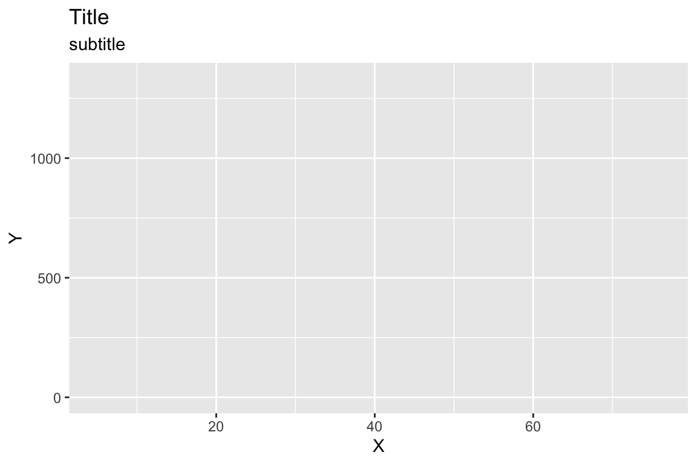

Description of the graph
PACKAGES:
Install packages.
library(ggplot2)
DATA:
Description of data
df <- tibble::tibble(X = sample(x = 1:100, 10, FALSE), Y = rlnorm(10, 1, 3))
CODE:
Code for creating graph
# labels labs_graph <- ggplot2::labs(title = "Title", subtitle = "subtitle", x = "X", y = "Y") # layers ggp2_graph <- ggplot2::ggplot(data = df, mapping = aes(x = X, y = Y)) + ggplot2::geom_blank() # graph ggp2_graph + labs_graph
GRAPH:
